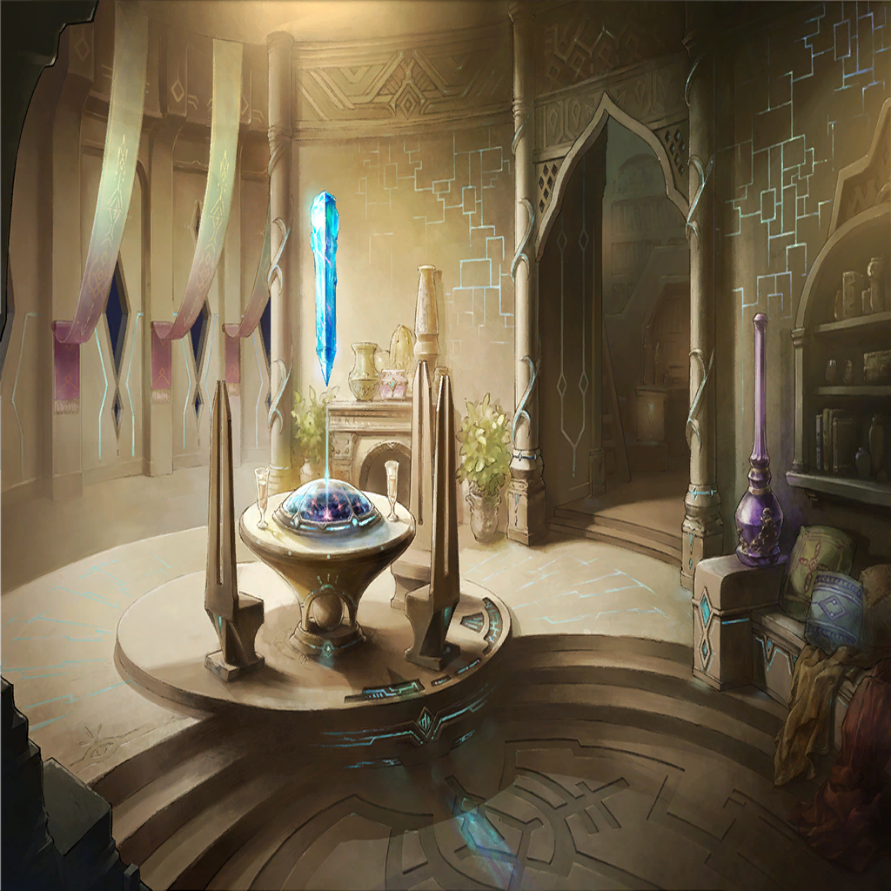

Bianca
Bianca
Bianca
Bianca
Bianca
Bianca
Bianca


Yna Ku

| |
| |
|  | |
Bianca |
Don't you think it's a little cruel to lock me up now that I've come back? |
| Kubera | Priestess of Ouroboros... You, who will reveal a new path to us... |
| Kubera | Roh Ku is looking for you, for the Mammon subjugation ceremony. |
Bianca |
Oh my, is he? So that's why you came for me yourself. |
Bianca |
Even though you are the Master of this Belt— |
Bianca |
The Avaritia Belt's symbol of armament and power. Kubera. |
| Kubera | Your useless self-effacement and pointless humility are unnecessary. |
| Kubera | We only need strive for strength. The path to true power is the sole purpose for the people of Avaritia. |
| Kubera | You told me you can impart that knowledge to me. Can you not, "Temptation Snake"? |
Bianca |
That's not my name. |
Bianca |
But I did make a promise, so I'll teach you. |
Bianca |
You want a way to steal the weapon born from the twisting of truth of the world, the power of a dragon. |
| |
| Yna | ...?! |
| Yna | Where...am I? |
| Yna | (The equipment in this room, this distinctive smell... It couldn't be! |
| ??? | Yna? How long are you going to sleep in? |
| Yna | Ah! |
| ??? | You're finally awake! Even if you stayed up late last night, you can't sleep in till noon! |
| Yna | Benika! |
| Benika | Whoa! What's with you, big brother? |
| Benika | Did you have a nightmare? You're such a scaredy cat! |
| Yna | You may be right. |
| Benika | Huh? Are you really okay? You're acting strange... |
| Benika | You usually say "There is no weaker human in this Belt, Benika." |
| Yna | That was... Those were just jokes. |
| Benika | I know. You don't care about how strong someone is, anyway. |
| Benika | Plus, I am weak! |
| Yna | That's not something to be proud of. |
| Benika | Eheheh... |
| Yna | Don't overdo it. |
| Benika | I know, I know. But the pain from the corruption isn't so strong today, so I'm fine. |
| Yna | ......... |
| Yna | (This is definitely the Avaritia Belt. And this form is...my younger self?) |
| Yna | (Which means, I was blown into the past...and merged with my former self?) |
| Yna | (I don't understand. If I were Nimul and had this amount of information, I would have thought of some sort of hypothesis.) |
| Benika | Luke! Din dins! |
| Luke | Skree, skree! |
| Yna | Benika, where did that animal come from? |
| Benika | Oh, um... It was a stray. From your master's workshop's...uh... |
| Yna | Nameless Isle? |
| Benika | Yeah, that's right! It was hurt, so I treated it and it became attatched to me. |
| Yna | Are you even capable of taking care of it properly? |
| Benika | Yes, of course I can! |
| Yna | All right then. |
| Yna | (Benika started caring for that animal, Luke...the month before this Belt was destroyed.) |
| Yna | (Which means there's no time. But... But I...) |
| |
| Quence | You can't tell me you're not interested. Wouldn't you like to see your sister again, Yna? |
Yna Ku |
...! |
| Yna | (What should I do?) |
| Benika | Oh yeah. You're going to your master's workshop today, right? |
| Yna | Oh, uh, yes... I am. |
| Benika | Um, do you remember what day it is today? |
| Yna | (Right. Today is...) |
| Yna | (It should be all right. I have memories of returning home today.) |
| Yna | Your birthday, right? Don't worry. I will return home before it gets dark. |
| Benika | Really?! |
| Yna | I also have a present for you. Look forward to it. |
| Benika | You promise? |
| Yna | Yes. I'll be back soon. |
| Benika | Have a good day, big brother! |
| |
| Yna | It's just as I remembered. |
| Yna | My hometown... |
| Greedy Soldier | If it isn't Yna. Are you heading to the workshop right now? |
| Yna | Indeed. Master called for me. |
| Greedy Soldier | It's rare for that misanthrope Roh Ku to ask for anyone. |
| Greedy Soldier | He must really like you. I'm sure you'll become a great smith one day. |
| Yna | That would be nice. |
| Greedy Soldier | We're all looking forward to the day you'll make us some strong weapons. |
| Yna | Right... |
| Yna | It makes sense, since it is the same past I lived through before, but they never change. |
| Yna | Avaritia soldiers only train and strive for strength. They are the most covetous of the seven regions. |
| Yna | If what lies ahead for them is destruction, I... |
| Yna | What should I do? |
| Yna | No answer will come today. But there is still time. |
| Yna | First, I must go to Master's workshop. |
| |
| Sinner | Groooooooaaah! |
| Yna | Damn. Master's workshop is just a few steps away. |
| Yna | (The me of this time was not as adept in battle as I am now. I do not know how well I will do, but...) |
| Yna | I have no intention of just lying down and letting you kill me. You will get out of my way, or die! |